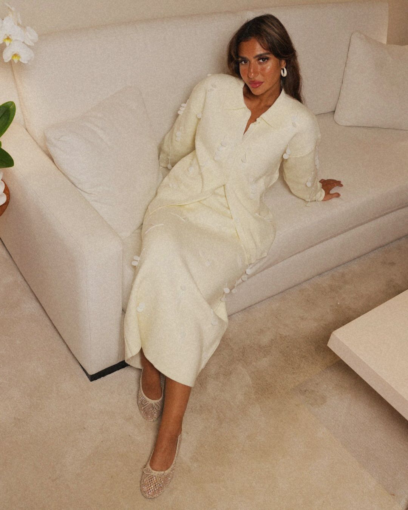

Refined in the details.
A considered line. A balanced silhouette. The thoughtful touches that make an outfit feel quietly put together.
That moment in the mirror when the piece, the feeling and the woman looking back all belong together. We make room for that kind of elegance.


A lunch that turns into an evening. A familiar gathering. A plan that feels special simply because it is yours. You want to arrive feeling polished, comfortable in your own style and entirely yourself.
Noetic curates distinctive clothing with those moments in mind. Refined femininity, thoughtful coverage and an eye for the details that make a piece feel personal. Our point of view gives you a place to begin. Your life gives it meaning.


There is a particular pleasure in finding something you want to look at twice. The line of a sleeve. An expressive print. A detail that changes the way the whole look feels.
That is what guides the Noetic edit: considered silhouettes, a feminine sensibility and pieces with character. We help bring the choice into focus, with room for the way you like to dress.
Explore the collectionA considered line. A balanced silhouette. The thoughtful touches that make an outfit feel quietly put together.
Graceful shapes and thoughtful coverage, with room for the way you move, gather and spend your days.
Expressive prints and unexpected accents. Something to fall for, then wear in a way that feels your own.
A line that catches your eye. A silhouette you can already picture yourself wearing. Distinction can be quiet, and still feel unmistakably personal.
Explore this striped Noetic look, from its overall silhouette to the way its pattern comes together.
The full silhouette, with its flowing striped lines.
Noetic is a shared point of view, brought to life by people. Meet our founder and co-founder, and the team behind the pieces and the experience around them.

Founder

Co-founder
Elegance that turns heads—without raising its voice.
The collection is one part of the story. The way you discover it, understand it and find help when you need it matters too.

Creative
Giving the Noetic world a creative voice, from the feeling of an image to the details that hold it together.

Head of Fashion
A fashion perspective on the silhouettes, combinations and considered details within the collection.

Customer Support
A real person to turn to when you want to understand a piece or ask about your order.
The right starting point is your life: where you are going, what you love and how you want to feel.
A slow afternoon, a familiar gathering or a moment you have been looking forward to. Choose for the life you are actually living.
A graceful line, a print with personality, a considered accent. Give yourself room to be drawn to something.
Take a closer look at the fabric, measurements and coverage. Ask us what you need to know, then imagine how you would wear it.
You deserve more than a lovely photograph. Take time with the fabric information, garment measurements and different views of the piece. The details help you imagine it in your own life.
Ask us about a pieceLook closely at the silhouette, finish and coverage. Each piece has its own character; the product information is where to understand it.
Compare garment measurements with a piece you already love wearing. Let your preferences for fit and length guide you.
Review shipping, returns and exchanges before ordering. Our team is here when you have a question.
A few answers to help you feel closer to the brand, and clearer about your next choice.
Refined, feminine and distinctive. We look for considered silhouettes, thoughtful coverage and memorable details, with a point of view that feels polished and inviting.
Our world includes everyday plans, outings, gatherings and meaningful moments. Occasionwear is part of the collection, alongside pieces for the rest of your life.
Start with your day and the way you want to feel. Look closely at the product images, fabric information and garment measurements, then choose the silhouette and coverage that suit you. You can also ask our team for help.
Read the current shipping information and return and exchange policy before ordering. Product eligibility and policy details can vary.

For a day you have planned. A gathering you are looking forward to. Or simply the pleasure of choosing something that feels like you.